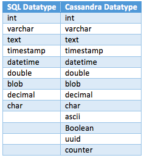

Transformation rules
Basically a transformation rule is, the principle in logic establishing the conditions under which one statement can be derived or validly deduced from one or more other statements especially in a formalized language.
SiTra is a simple Java library for supporting a programming approach to writing transformations aiming to, firstly use Java for writing transformations, and secondly, to provide a minimal framework for the execution of transformations. SiTra consists of two interfaces and a class that implements a transformation algorithm. The aim is to facilitate a style of programming that incorporates the concept of transformation rules.
Transformer – the primary transformation object; it contains a collection of rules, and manages the process of transforming source model objects into target model objects.
Rule – a rule deals with specific detail of how to map an object from a source model into an object of the target model. One or more rules may or may be applicable for the same type of object and it is necessary to have a means to determine the applicability of a rule for a specific object, not just its type.
These are the rules to be followed to convert SQL to Cassandra:
Database2Keyspace (Database to Keyspace)
- This rule applies to the SQL database’s schema and to the Cassandra’s Keyspace.
- This rule takes the Database object and copies its schema name, and creates a new keyspace object with the same name as the SQL Database Schema.
Table2ColumnFamily (Tables to ColumnFamily)
- This rule applies to the SQL table and to the Cassandra’s column family.
- This rule, for each table in the SQL, takes the table object and creates a column family, in the keyspace, with the same name as the table.
- It adds any options to the table if specified.
SqlCol2NoSqlCol (SQL Column to NoSQL Column)
- This rule applies to the SQL columns and to the Cassandra columns.
- This rule applies to each column present in the SQL table object, and it takes a column object and creates a Cassandra column object with the same name.
- The following table represents the list of SQL Data types and the corresponding NoSQL Data types to which they are mapped. 
- If the size parameter is present for the SQL column object same value is applied for the Cassandra column.
- If the table has a constraint of type PRIMARY or COMPOSITE_PRIMARY then create a PrimaryKey for the column family with the reference of the column(s) object.
- A special case to be considered is, If the table has a constraint of type FOREIGN, then:
- Create a column family for each foreign key instance (called the reference column family).
- Each column family has the primary key as referred table's primary key and the consequent columns are the referee table's primary key.
SQLCons2NoSQLCons (SQL Constraint to NoSQL Constraint)
- This rule applies to the SQL’s Constraints and to the Cassandra’s Constraints.
- This rule applies to each constraint object present in the SQL table, and it takes the Constraint object and checks if the constraint is primary key constraint if yes, it creates a Cassandra primary key object.
SQLCell2NoSQLCell (SQL Cell to NoSQL Cell)
- This rule applies to the SQL’s Cells and to the Cassandra’s Cells.
- This rule applies to each cell object present in the SQL table, and it takes the cell object and copies the value of the cell, and it creates a Cassandra cell object with the same value.
Reading data
- Read metadata of the current SQL Database.
- Appropriately the objects for database, columns and constraints.
- Read database to fetch data and store as following:
- Create a row object for each entry.
- Create a cell object for each for that entry passing the column object name and the value.
- Add the cell object to the list of cells in the row.
Transferring data
- Create a Row object using the current column family.
- Create additional column(s) if required. Use uuid or timeuuid in the name to differentiate between same name columns.
- Create a cell object for every entry in the row using the value.
- Add the cells in the list of cells in the row.
- If the current row entry is from a column family or table that has a constraint of type FOREIGN, then:
- Add a column in the row of the reference column family in which the Primary key is the referred value. Add the timestamp, or timeuuid in the column name to differentiate it.
- Create the cell with the above column object and put the Primary Key of the current column family’s row.
- Add the cell to the reference table’s row.